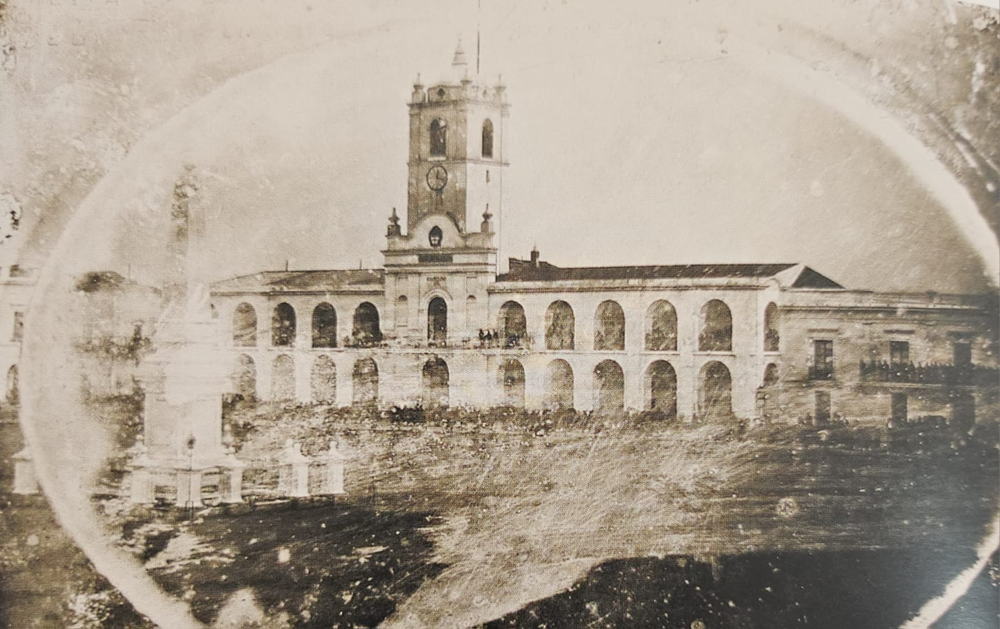
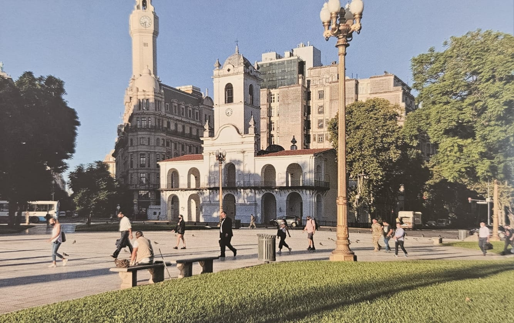

Cabildo y Pirámide de Mayo originales
1850- Así lucía el primer estilo que supo tener el Cabildo, antes de sufrir diversas mutaciones a través de su existencia. Se puede observar también, la Pirámide de Mayo en su original ubicación. El Cabildo sería reducido y hasta reconstruido a semejanza del edficiio original en el año 1940.

Cabildo en la actualidad
2021- Se puede observar que la Pirámide de Mayo ya no se encuentra en la fotografía, ya que aparte de ser modifciada, fue trasladada a su emplazamiento actual, unos 70 metros más al este y más cerca de la Casa Rosada. El Cabildo, luego de perder el ala norte en 1888, el derribamiento de su torre y la pérdida de su otra ala en 1931, finalmente resultó en un nuevo edifcio, el cual se ve en la fotografía.